Littering
Laziness and carelessness has bred a culture of habitual littering. Typically, people have become too lazy and unwilling to throw away trash appropriately. Everyday, people throw their trash on the ground and or ocean. This affects the environment. Litter can reduce air quality due to the smell and toxic/chemical vapor emanating from the trash. If we keep on littering, our animals will suffer and so will human kind. It is important that we take action and preserve the earth.
Trash and Air Pollution
For air pollution, trash is a burning problem. When our trash is taking to a landfill and or dump, it is burned. The smoke caused by the fire effects our air quality. The smoke created by this burning especially affects people with sensitive respiratory systems, as well as children and the elderly. Exposure to smoke can also increase the risk of heart disease, cause rashes, nausea, and headaches. So not only is the smoke from burning our garbage making our air go bad but it is also directly effecting the people. Not only does air pollution effect humans but also animals. All animals, despite their size, can be affected by pollution. Animals depend on oxygen that comes from the air, and when the air is contaminated, harmful gases and particulates are inhaled. The pollution that animals inhale can accumulate in their tissues over time, causing damage to their organs. When we throw our trash where ever we feel like throwing it, we are polluting the earth. So next time when you think of littering, think about all of the people and things you are hurting.
 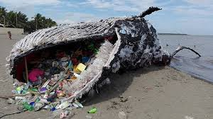
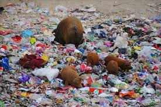
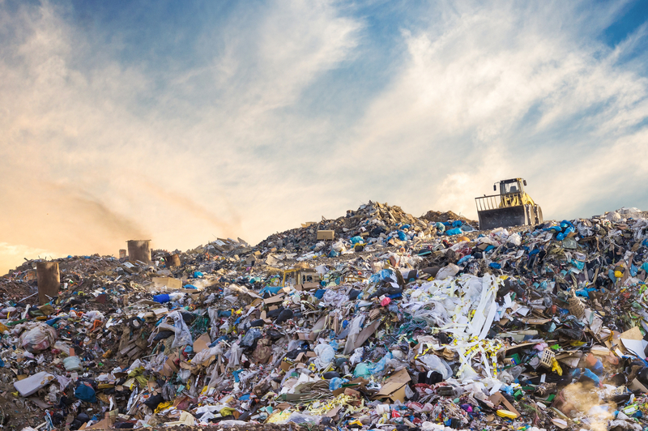
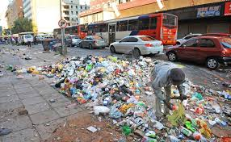
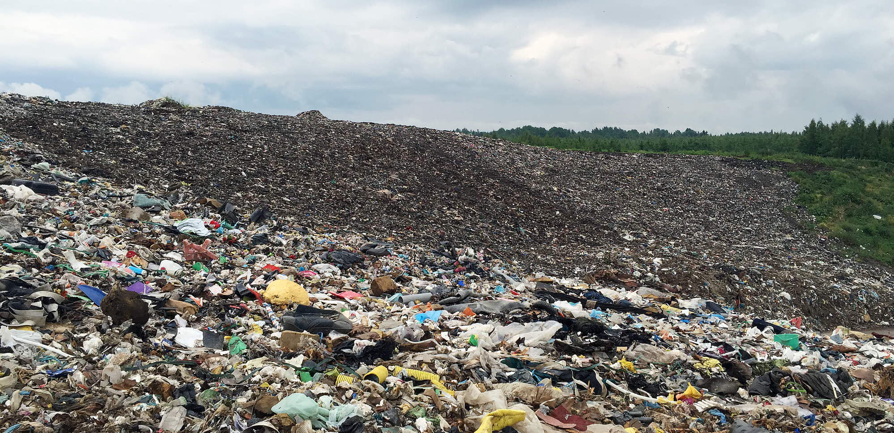
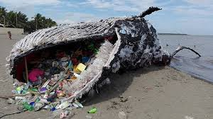
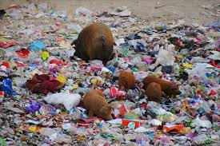
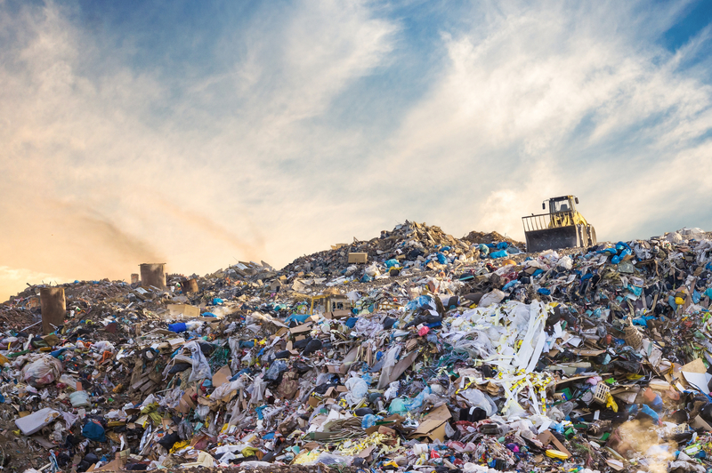
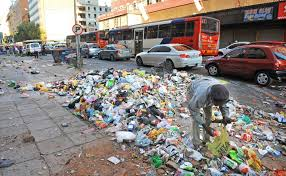
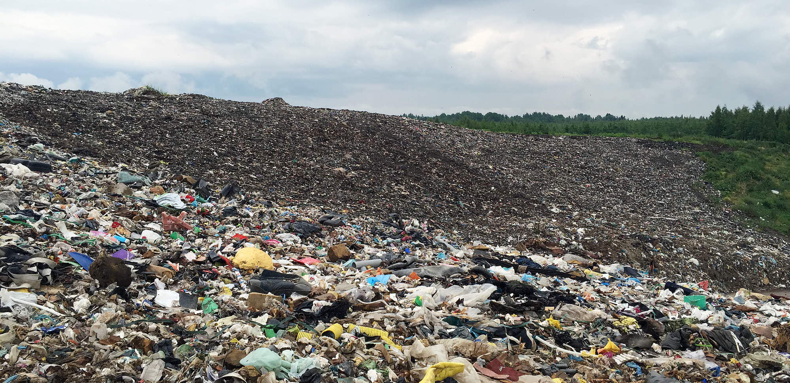
Make a Change and Recycle
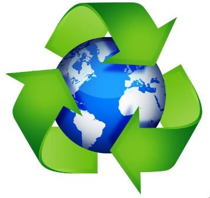Recycling helps protect the environment. It reduces the need for extracting, refining and processing raw materials all of which create air and water pollution. Harmful chemicals and greenhouse gasses are released from rubbish in landfill sites. By recycling, we can prevent this. There are many different ways to recycle, including, print things double sided, recycle any paper you use, reuse plastic bottles, and so much more. These simple steps will lead us on a path to better air quality. The better the air quality, the longer life we will live. Start recycling now before the air gets so bad that the human race begins to decrease. It all starts with us, so make a change.
Recycling is essential to cities around the world and to the people living in them. No space for waste. Our landfill sites are filling up fast, by 2010, almost all landfills in the UK will be full. Reduce financial expenditure in the economy. Making products from raw materials costs much more than if they were made from recycled products.Preserve natural resources for future generations. Recycling reduces the need for raw materials; it also uses less energy, therefore preserving natural resources for the future.